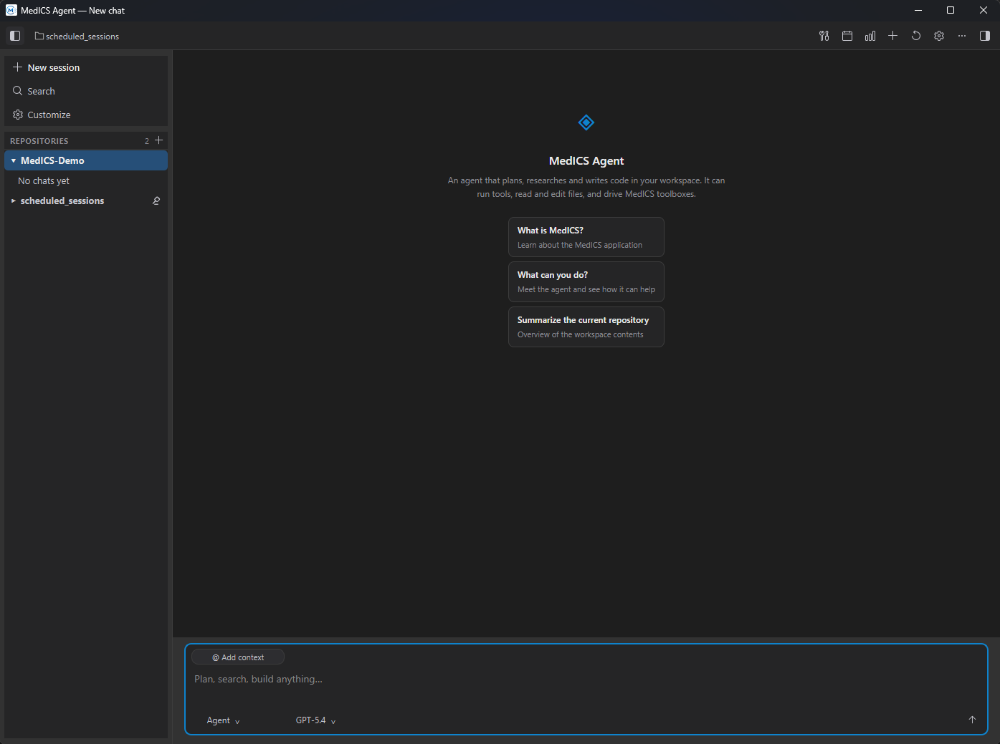
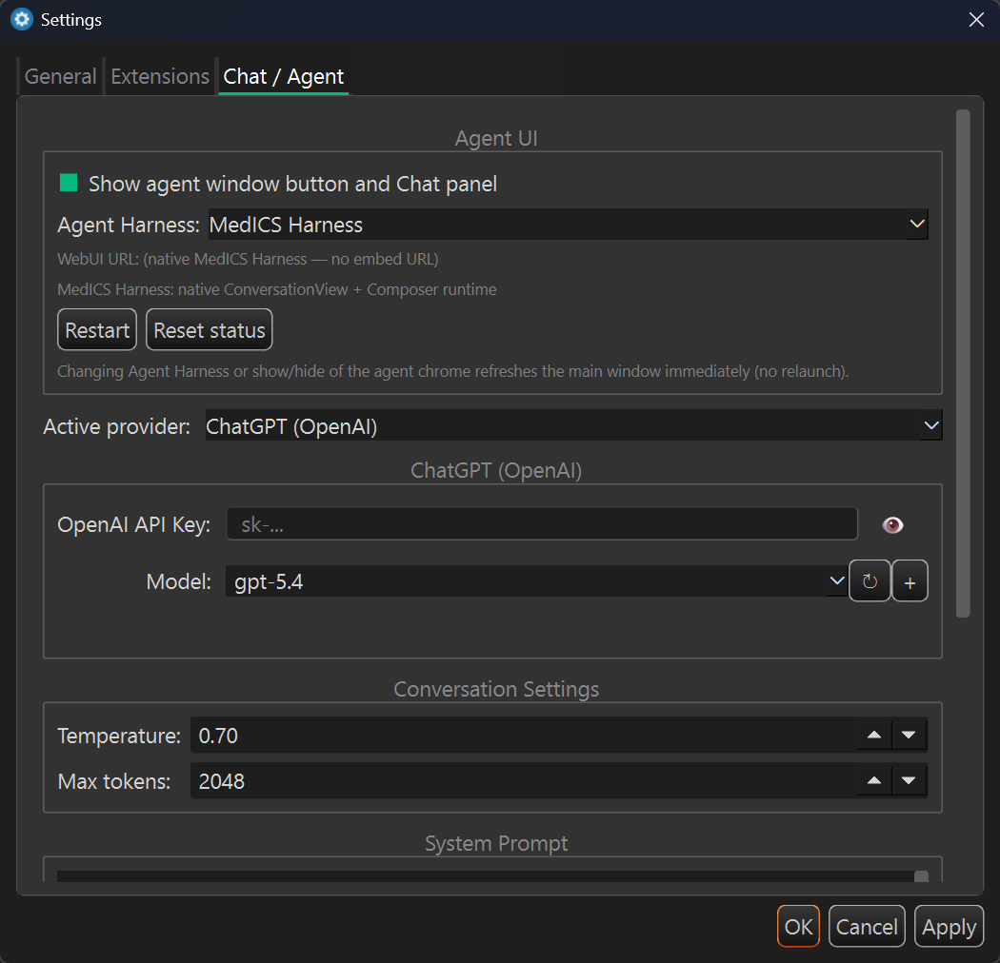

AI assistant
MedICS includes an AI assistant that can answer questions and carry out tasks. You can ask it about the data you have open, or ask it to do something and it will use the tools it needs — reading files, running Python, driving the toolboxes — and report back. Actions that create or change data ask for your approval first.
The assistant appears in two places, and both share the same conversations:
| Surface | What it is |
|---|---|
| Chat panel | Docked on the right of the main window. Toggle it from View → Show Chat. |
| Agents Window | A separate window (Ctrl+Shift+A, or View → Agents Window). Use it for a full-size conversation, or across several screens. |
Using the chat
Type your request in the composer at the bottom and send it with Enter. While the assistant works, each step it takes appears in the conversation.
The composer:
| Control | What it does |
|---|---|
| @ Add context | Attaches files or folders as context. Attachments appear as chips — click a chip to remove it. |
| Mode | How the assistant behaves this turn — see the table below. |
| Model | Which model answers. The menu also has Refresh model lists and Configure providers and API keys…. |
| Send / Stop | Sends the prompt; while the assistant is running, the same button stops it. |
| Prompt box | Where you type. Its border is tinted by the current mode. |
| Mode | What the assistant does |
|---|---|
| Agent | Full agent — calls tools and edits your workspace. |
| Plan | Researches and drafts a plan; it only runs the plan after you confirm. |
| Ask | Answers questions only — no tool calls and no file changes. |
If you send a message while the assistant is busy, it is queued; a strip above the composer lists the queued prompts, where you can edit or remove them before they run.
In the conversation:
- Each turn shows the assistant's work — the tools it used, with their arguments and results — followed by its answer. Tool calls that repeat are grouped with a count.
- The assistant's reasoning is available in small expandable notes labelled with its name.
- Every finished turn has Copy (copies the whole turn) and Fork (starts a new conversation from that point) buttons, and a duration.
- When the latest prompt scrolls out of view, a small You bar pins to the top; click it to jump back to that turn.
- Click one of your own messages to edit and resend it.
Approvals & permissions
When the assistant wants to run something that could change your data, it stops and shows an ACTION REQUIRED card with the tool, the reason and its arguments, and buttons to decide:
| Button | What it allows |
|---|---|
| Allow once | Runs this one action only. |
| Allow for run | Allows this tool for the rest of the current run. |
| Always allow | Remembers the choice for this tool in future runs. |
| Allow all this session | Allows every tool until you restart MedICS. |
| Deny | Refuses the action. |
If you do not answer within a few minutes the request is denied automatically. A mode-switch request instead offers Switch to Plan or Stay in Agent.
The Tools & permissions dialog (the tools icon in the header) lists every tool with two settings: whether it is available to the model, and whether it auto-runs — Allow runs it without asking, Ask confirms each time, and Deny blocks it. There are bulk buttons to enable or disable all tools, allow all to auto-run, or ask for all.
The Agents Window
The assistant in a window of its own, with the conversation beside a session list and a workspace panel.

Its header, left to right:
| Button | What it does |
|---|---|
| History | Shows or hides the session list (Ctrl+B). |
| Workspace folder | Shows the folder the chat is attached to; click to change it. |
| Tools | Opens Tools & permissions. |
| Calendar | Opens Scheduled tasks. |
| Graph | Opens the Token usage dashboard. |
| Add | Starts a new session (Ctrl+N). |
| Refresh | Reloads the chat surface. |
| Gear | Opens the assistant settings. |
| Ellipsis | More actions — rename or clear the chat, scheduled tasks, customize the agent, export the chat as Markdown, open the agent config folder, refresh model lists, and settings. |
| Right panel | Shows or hides the workspace panel with the chat's file changes (Ctrl+Alt+B). |
Sessions & history
Every chat belongs to a repository — a folder you opened in MedICS — so the list in the Agents Window is grouped by folder. Use the Search box to filter by title or content, and the right-click menu on any chat to Open, Rename…, Duplicate or Delete it. Several chats can be deleted at once. A folder's menu lets you start a chat there, pin it to the top, or remove it from the list.
Two extras use the same assistant:
- Scheduled tasks (the calendar in the Agents Window) run a prompt in the background on a schedule — you give each task a name and a prompt, and choose how often it repeats. Run now starts one immediately.
- The Token usage dashboard (the graph) shows how much the assistant has used, per model, and lets you set limits.
What it is good at
- Answering questions about your images, tables and variables.
- Running Python against your live workspace.
- Driving the toolboxes for you — opening a tool, importing, previewing.
- Multi-step tasks that combine the above.
Configuration
Choose the provider and model and enter your API key in Settings → Chat / Agent. The assistant is optional — MedICS works fully without it.

The Chat / Agent tab holds the Active provider and its key and model, the Temperature and Max tokens, and the System Prompt — the instructions sent with every request. The same tab also chooses the Agent Harness and shows or hides the assistant chrome. See Settings & preferences for each control.
The assistant's Customize agent action (in the Agents Window's ⋯ menu, or the Customize item in the session list) opens a dialog of instruction files that are prepended to every prompt — instructions, personality, notes about you, long-term memory and more.